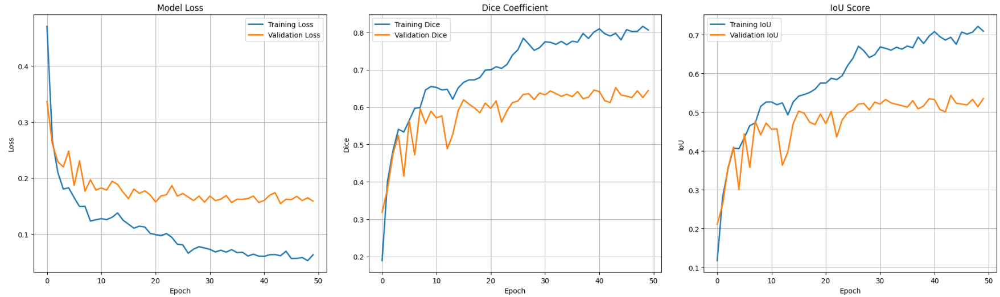
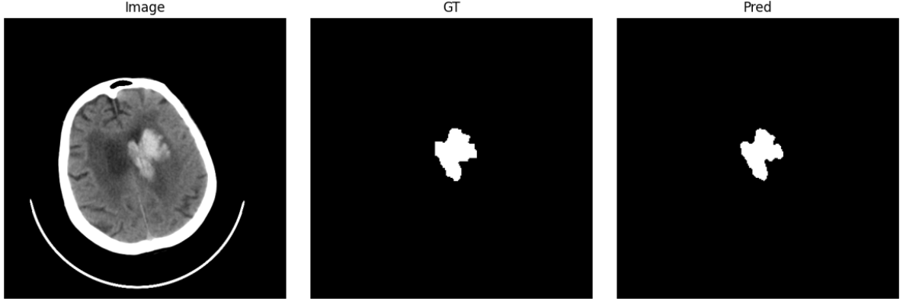

Data Scientist
Liyang FANG
MSc Artificial Intelligence at EPITA · Deep learning for medical imaging (U-Net, stroke lesion segmentation) · Seeking a first full-time Data Scientist role in France.
Featured Work
Projects
🧠 U-Net Stroke Lesion Segmentation
Built and compared segmentation models (U-Net, Attention U-Net, U-Net++) to detect ischemic and hemorrhagic stroke lesions from brain MRI scans. Evaluated with Dice, IoU, Hausdorff Distance. Handled preprocessing, augmentation, training, and reporting.


🛍️ Market Customer Data Analysis
EDA + Random Forest Classifier on retail data to identify high-value customers. Modular Python pipeline with config-driven analysis.
View on GitHub →🚗 Automotive Market Sales Analysis
End-to-end pipeline analysing global car sales (thermal vs electric). SQL business queries, Seaborn visualisations, FastAPI endpoints for Power BI.
View on GitHub →🧠 Black Friday Purchase Prediction
Complete data engineering pipeline: Airflow ETL from CSV → PostgreSQL → ML prediction model → FastAPI endpoints → Streamlit app → Grafana monitoring. Built as a 4-person team.
View on GitHub →